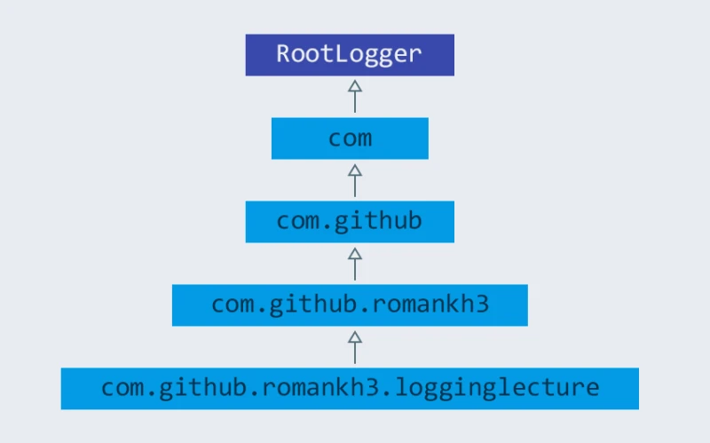

Logging (логирование, журналирование) — это процесс записи куда-то (в файл, в сетевой сокет) данных о работе программы. Место, куда эти данные записываются, чаще всего представляет собой log-файл или систему логирования (например: ELK stack). Само содержимое называют logs (логи). Log (лог) — это одна запись, которая делается в log-file или систему логирования. Само действие по отправке записи при logging называется log (логировать, журналировать, записывать в logs).
Если в работе сервера, компьютера или программного обеспечения возникла неизвестная ошибка, в первую очередь смотрят logs. Log-файл — текстовый файл с информацией о действиях программного обеспечения или пользователей, который хранится на компьютере или передается на хранение в систему логирования. Это хронология событий и их источников, ошибок и причин, по которым они произошли. Читать и анализировать логи можно как с помощью обычного текстового редактора, так и с помощью специального ПО.
Logging позволяет ответить на вопросы, что происходило, когда и при каких обстоятельствах. Без логов сложно понять, из-за чего появляется ошибка, если она возникает периодически и только при определенных условиях. Чтобы облегчить задачу администраторам и программистам, в logs записывается информация не только об ошибках, но и о причинах их возникновения. Благодаря logs найденные ошибки можно быстро исправить.
Следует так же понимать, что logs - фактически единственный способ понять, что произошло с программой, установленной и работающей на production environment, к которому, чаще всего, разработчики не имеют доступ. Поэтому разработчикам стоит заботиться о том, что бы разработанное ПО осуществляло logging, которое позволит установить причины неполадки и т.д.
Весь процесс логирования состоит из трех частей.
-
Сбор информации.
-
Фильтрование собранной информации.
-
Запись отобранной информации.
Типы логов
Для удобной работы с логами их делят на типы. Это помогает быстрее находить нужные и выбирать правильные инструменты для работы с ними. Например, выделяют:
-
системные логи, то есть те, которые связаны с системными событиями;
-
серверные логи, регистрирующие обращения к серверу и возникшие при этом ошибки;
-
логи баз данных, фиксирующие запросы к базам данных;
-
почтовые логи, относящиеся к входящим/исходящим письмам и отслеживающие ошибки, из-за которых письма не были доставлены;
-
логи авторизации;
-
логи аутентификации;
-
логи приложений, установленных на этих операционных системах.
Также логи можно типизировать по степени важности:
-
Fatal/critical error — то, что нужно срочно исправить.
-
Not critical error — ошибки, которые не влияют на пользователя.
-
Warning — предупреждения, то, на что нужно обратить внимание.
-
Initial information — информация о вызовах API сервиса, запросах в БД, вызовах других сервисов.
Еще одним важным вопросом на который надо ответить — это что необходимо отправлять в log.
Работа приложения — это происходящие в нем события, которые в свою очередь могут быть классифицированы на:
-
события, связанные с бизнес-логикой;
-
события, связанные с безопасностью приложения;
-
системные события, связанные с уже конкретикой реализации — вызовов ОС, использования библиотек, фреймворков и т.д.
Записывать в logs обязательно необходимо:
-
Начало/конец работы приложения. Нужно знать, что приложение действительно запустилось, как и ожидалось, и завершилось так же ожидаемо.
-
Вопросы безопасности. Здесь хорошо бы логировать попытки подбора пароля, логирование входа пользователей и т.д.
-
Некоторые состояния приложения. Например, переход из одного состояния в другое в бизнес процессе.
-
Некоторая информация для debug, с соответственным уровнем логирования.
-
Некоторые SQL скрипты. Есть реальные случаи, когда это нужно. Опять-таки, умелым образом регулируя уровни, можно добиться отличных результатов.
-
Выполняемые потоки (Thread) могут быть отправлены в log в случаях с проверкой корректной работы.
Популярные ошибки в logging:
-
Избыток логирования
Не стоит логировать каждый шаг, который чисто теоретически может быть важным. Есть правило: логи могут нагружать работоспособность не более, чем на 10%. Иначе будут проблемы с производительностью. -
Логирование всех данных в один файл
Это приведет к тому, что в определенный момент чтение/запись в него будет очень сложной, не говоря о том, что есть ограничения по размеру файлов в определенных системах. -
Использование неверных уровней логирования
У каждого уровня логирования есть четкие границы, и их стоит соблюдать. Если граница расплывчатая, можно договориться какой из уровней использовать.
Библиотеки логирования в Java
В Java существуют следующие библиотеки логирования, иногда называемые loggers (логерами):
-
Log4j - это первый набор инструментов для логирования Java, который появился еще в 1999-м году. Внутри себя имеет различные способы вывода логов, несколько форматов логирования и многое другое. Раньше данная библиотека активно применялась, но уже долгое время этот проект не развивается.
-
JUL —
java.util.logging. Является частью JDK. Имеет множество уровней логирования, например, только для отладки у этого инструмента есть в арсенале 3 отладочных уровня вместо одного как у большинства библиотек. -
JCL — Apache Commons Logging. Из-за того, что долгое время не было промышленного стандарта в logging и был период, когда многие создавали свой свои собственные библиотеки логирования, решили выпустить JCL — общую обертку, которая использовалась бы над другими.
-
Logback - был создан как альтернатива умирающему Log4j, разработанная создателями Log4j, поэтому он вобрал в себя все лучшее из этого инструмента, при этом усовершенствовал некоторые показатели.
-
Log4j 2.x - это улучшенная версия log4j 1.x и logback.
-
SLF4J — Simple Logging Facade for Java. Этот инструмент является оберткой над многими популярными библиотеками логирования, например: Logback, Log4j, JUL и др., поэтому его рекомендуется использовать в паре с полноценной библиотекой для логирования.
Уровень логирования
Если в лог-файл записывать все действия программы, то там будет большое количество различных сведений. В некоторых ситуациях лог-файлы могут генерироваться очень быстро и в огромных размерах. В этом случае найти нужную информацию в логах будет очень нелегко. Поэтому, чтобы контролировать объемы записываемой информации, придумали различные уровни логирования.
Уровень логирования — это разделение событий по приоритетам, по степени важности. Например, error - пишем ошибки, debug - пишем более подробно в лог и т.д.
Практически все библиотеки логирования (кроме JUL) имеют следующие уровни логирования:
-
OFF: никакие логи не записываются, все будут проигнорированы
-
FATAL: ошибка, после которой приложение уже не сможет работать и будет остановлено, например, JVM out of memory error
-
ERROR: уровень ошибок, когда есть проблемы, которые нужно решить. Ошибка не останавливает работу приложения в целом. Остальные запросы могут работать корректно
-
WARN: обозначаются логи, которые содержат предостережение. Произошло неожиданное действие, несмотря на это система устояла и выполнила запрос
-
INFO: лог, который записывает важные действия в приложении. Это не ошибки, это не предостережение, это ожидаемые действия системы
-
DEBUG: логи, необходимые для отладки приложения. Для уверенности в том, что система делает именно то, что от нее ожидают, или описания действия системы:
method1 начал работу -
TRACE: менее приоритетные логи для отладки, с наименьшим уровнем логирования
-
ALL: уровень, при котором будут записаны все логи из системы
Если в приложении в каком-то месте включен уровень логирования INFO, будут записываться в logs все уровни, начиная с INFO и до FATAL. Если будет уровень логирования FATAL, будут записаны только logs с этим уровнем.
JUL имеет следующие уровни логирования (по степени убывания приоритета):
-
OFF
-
ALL
-
SEVERE
-
WARNING
-
INFO
-
CONFIG
-
FINE
-
FINER
-
FINEST
Основные термины
В основе большинства библиотек логирования в Java лежат три понятия:
-
Logger
-
Appender
-
Layout
Logger
Logger — это некий объект, который отвечает за запись информации в лог-файлы или систему логирования, опираясь на заданные уровни логирования. Logger создается с помощью Factory и на этапе создания ему присваивается имя. Имя может быть любым, но по стандарту имя должно быть сопряжено с именем класса, в котором собираются что-то логировать.
public class Program {
private Logger logger = LoggerFactory.gerLogger(SomeClass.class);
// ...
}Основная задача Logger — не пропустить событие, которое нужно записать в лог-файл.
public class Program {
private Logger logger = LoggerFactory.gerLogger(SomeClass.class);
public static void main(String[] args) {
logger.info("Application started");
logger.debug("Or not");
}
// ...
}Каждый log представляет собой событие, которое произошло. Событие по сути состоит из двух полей:
-
message -
level
В примере выше, level - это Level.Info, а message - это "Application started".
Appender
Appender — это конечная точка, куда «приходит» информация для логирования. В качестве appender могут выступать: файл, база данных, консоль, сокет и др. У appender нет каких-либо ограничений, куда записывать сообщения. Можно написать свой appender, который пишет сообщения куда-угодно. Если Logger — это начальная точка в logging, то Appender — это конечная точка.
Loggers и appenders связаны в отношении many-to-many. При этом один logger может содержать несколько appenders и наоборот. Чтобы изменить поведение logger по умолчанию, нам нужно произвести конфигурацию для logging.
Layout
Layout — это формат, в котором выводятся сообщения. Форматирование сообщений напрямую зависит от используемой библиотеки при logging.
Logging Nodes
При создании logger используется класс, но по итогу записывается полное имя класса с пакетами. Это делается, чтобы потом можно было разделить на logging nodes (узлы логирования), и для каждого узла настроить уровень логирования и appender. Например, имя класса: com.github.romankh3.logginglecture.MainDemo — в нем создался logger. И вот таким образом его можно разделить на logging nodes.

Каждый logger имеет имя, описывающее иерархию, к которой он принадлежит. Разделитель – точка. Принцип полностью аналогичен формированию имени пакета в Java. Например: by.rakovets.example.SomeClass. Главный узел — нулевой RootLogger. Это узел, который принимает все логи всего приложения. Каждому logger можно выставить свой уровень. Установленный logger уровень вывода распространяется на все его дочерние loggers, для которых явно не выставлен уровень. Поэтому у всех loggers будет уровень логирования, даже если явно мы не прописали для by.rakovets.example.SomeClass его, то он будет наследоваться от RootLogger.
Appenders настраивают свою работу именно на узлы логирования. Но такое наследование appenders можно отключить через конфигурацию, для этого стоит посмотреть в сторону выставления флага additivity="false" на loggers.
Конфигурация и использование
Конфигурация
При конфигурировании можно выбрать куда будет производиться запись, путь где будет лежать файл лога, количество файлов, их размеры. Более подробные описания конфигураций для различных реализаций будут приведены при описании этих реализаций.
В зависимости от используемой библиотеки, loggers могут конфигурироваться различными способами.
-
Log4j поддерживает конфигурирование двумя способами – как properties и xml файл.
-
JUL настраивается только через properties файл.
-
Logback может быть сконфигурирован через xml и groovy файл.
-
Log4j 2 может быть сконфигурирован через xml, json и yaml файл.
Конфигурация через xml-файл:
<?xml version="1.0" encoding="UTF-8" ?>
<!DOCTYPE log4j:configuration SYSTEM "log4j.dtd">
<log4j:configuration debug="false" xmlns:log4j="http://jakarta.apache.org/log4j/">
<appender name="ConsoleAppender" class="org.apache.log4j.ConsoleAppender">
<param name="Encoding" value="Cp866"/>
<layout class="org.apache.log4j.PatternLayout">
<param name="ConversionPattern" value="%d{ISO8601} [%-5p][%-16.16t][%32.32c] - %m%n" />
</layout>
</appender>
<root>
<priority value="DEBUG"/>
<appender-ref ref="ConsoleAppender" />
</root>
</log4j:configuration>Конфигурация через properties-файл:
log4j.debug = false
log4j.rootLogger = DEBUG, ConsoleAppender
# CONSOLE appender customisation
log4j.appender.ConsoleAppender = org.apache.log4j.ConsoleAppender
log4j.appender.ConsoleAppender.encoding = Cp866
log4j.appender.ConsoleAppender.layout = org.apache.log4j.PatternLayout
log4j.appender.ConsoleAppender.layout.ConversionPattern = %d{ISO8601} [%-5p][%-16.16t][%32.32c] - %m%n
# File appender customisation
log4j.appender.FILE=org.apache.log4j.RollingFileAppender
log4j.appender.FILE.File=./target/logging/logging.log
log4j.appender.FILE.MaxFileSize=1MB log4j.appender.FILE.threshold=DEBUG log4j.appender.FILE.MaxBackupIndex=2 log4j.appender.FILE.layout=org.apache.log4j.PatternLayout log4j.appender.FILE.layout.ConversionPattern=[ %-5p] - %c:%L - %m%nПринято считать эти два способа равнозначными. При инициализации они ищутся в classpath, сначала xml-файл, потом properties-файл. Так что при наличии обоих рабочим будет именно xml.
Ниже приведен пример конфигурации log4j.properties.
log4j.appender.CONSOLE=org.apache.log4j.ConsoleAppenderЭта строка говорит, что мы регистрируем appender CONSOLE, который использует реализацию org.apache.log4j.ConsoleAppender. Этот appender записывает данные в консоль.
log4j.appender.FILE=org.apache.log4j.RollingFileAppenderЭтот appender записывает в файл.
Когда у нас уже есть зарегистрированные appenders, мы можем определить, какой будет уровень логирования в узлах и какие appenders будут при этом использоваться.
log4j.rootLogger=DEBUG, CONSOLE, FILE-
log4j.rootLoggerозначает, что будем настраивать главный узел, в котором находятся все логи; -
после знака равно первое слово говорит о том, с каким уровнем и выше будут записываться логи (в нашем случае это
DEBUG); -
далее после запятой указываются все appenders, которые будут использоваться.
Чтобы настроить определенный узел логирования, нужно использовать такую запись:
log4j.logger.com.github.romankh3.logginglecture=TRACE, OWN, CONSOLEгде log4j.logger. используется для настройки определенного узла, в нашем случае это com.github.romankh3.logginglecture..
Настройка CONSOLE appender:
# CONSOLE appender customisation
log4j.appender.CONSOLE=org.apache.log4j.ConsoleAppender
log4j.appender.CONSOLE.threshold=DEBUG
log4j.appender.CONSOLE.layout=org.apache.log4j.PatternLayout
log4j.appender.CONSOLE.layout.ConversionPattern=[%-5p] : %c:%L : %m%nЗдесь видно, что можно задать уровень, с которого будет обрабатывать именно appender. Реальная ситуация: сообщение с уровнем info принял узел логирования и передал appender, который к нему приписан, а вот уже appender, с уровнем warn и выше, лог этот принял, но ничего с ним не сделал.
Далее нужно определиться с тем, какой шаблон будет в сообщении (PatternLayout).
Пример настройки FILE appender:
# File appender customisation
log4j.appender.FILE=org.apache.log4j.RollingFileAppender
log4j.appender.FILE.File=./target/logging/logging.log
log4j.appender.FILE.MaxFileSize=1MB
log4j.appender.FILE.threshold=DEBUG
log4j.appender.FILE.MaxBackupIndex=2
log4j.appender.FILE.layout=org.apache.log4j.PatternLayout
log4j.appender.FILE.layout.ConversionPattern=[ %-5p] - %c:%L - %m%nЗдесь можно настроить, в какой именно файл будут записываться логи. Запись идет в файл logging.log.
log4j.appender.FILE.File=./target/logging/logging.logЧтобы не было проблем с размером файла, можно настроить максимальный: в данном случае — 1МБ.
MaxBackupIndex — говорит о том, сколько будет таких файлов. Если создается больше этого числа, то первый файл будет удален.
Использование
Чтобы использовать Logger, необходимо его создать:
public class Program {
private org.slf4j.Logger logger = org.slf4j.LoggerFactory.getLogger(ClassName.class);
}Чтобы сделать запись в лог, можно использовать множество методов, которые показывают, с каким уровнем будут записи.
public class Program {
private org.slf4j.Logger logger = org.slf4j.LoggerFactory.getLogger(ClassName.class);
public static void main(String[] args) {
logger.trace("Method 1 started with argument={}", argument);
logger.debug("Database updated with script = {}", script);
logger.info("Application has started on port = {}", port);
logger.warn("Log4j didn't find log4j.properties.Please, provide them");
logger.error("Connection refused to host = {}", host);
}
}Также можно использовать метод log() и передать в него параметры.
public class Program {
private org.slf4j.Logger logger = org.slf4j.LoggerFactory.getLogger(ClassName.class);
public static void main(String[] args) {
logger.log(Level.INFO, argument);
}
}Реализация (SLF4J/Log4J 2/Logback)
На данный момент в Java наиболее популярные следующие библиотеки логирования:
-
log4j 2
-
Logback
-
SLF4J (как фасад)
System.err.println()
Первоначально был, разумеется, System.err.println() - выводит запись в консоль. Его и сейчас используют для быстрого получения лога при debugging.
Log4j 2
Для использования log4j2 вам необходимо подключить библиотеки log4j-api-2.x и log4j-core-2.x.
<dependencies>
<dependency>
<groupId>org.apache.logging.log4j</groupId>
<artifactId>log4j-api</artifactId>
<version>${log4j.version}</version>
</dependency>
<dependency>
<groupId>org.apache.logging.log4j</groupId>
<artifactId>log4j-core</artifactId>
<version>${log4j.version}</version>
</dependency>
</dependencies>Logger создается вызовом статического метода класса org.apache.logging.log4j.Logger:
import org.apache.logging.log4j.Logger;
public class Program {
private Logger log = LogManager.getLogger(LoggingLog4j.class);
// ...
}Logger умеет принимать помимо String, Object и Throwable еще два новых типа — MapMessage и Marker.
public class Program {
private Logger log = LogManager.getLogger(LoggingLog4j.class);
public static void main(String[] args){
// Карта сообщений (напечатается как msg1="Сообщение 1” msg2="Сообщение 2”)
MapMessage mapMessage = new MapMessage();
mapMessage.put("msg1", "Сообщение 1");
mapMessage.put("msg2", "Сообщение 2");
// Маркер, объект по которому можно фильтровать сообщения
Marker marker = MarkerManager.getMarker("fileonly");
// Строковое сообщение
String stringMessage = "Сообщение";
// Строковое сообщение с параметрами
String stringMessageFormat = "Сообщение {}, от {}";
// Исключение
Throwable throwable = new Throwable();
// Объект
Object object = new Object();
}
}В классическом для loggers стиле методы делятся на два типа:
-
совпадающие с названием уровня логирования
log.info((marker, mapMessage, throwable); log.throwing(throwable);
-
методы
log(), принимающие уровень логирования в качестве параметра.log.log(Level.INFO, marker, stringMessage, throwable); log.throwing(Level.INFO, throwable);
Если не определить конфигурацию, то при запуске log4j2 выдаст гневное сообщение, о том, что конфигурация не задана и будет печатать сообщения на консоль уровнем не ниже ERROR. Конфигурация log4j2 задается несколькими вариантами: xml, json, yaml. Файл с конфигурацией автоматически ищется classpath, должен иметь название log4j2 и располагаться в пакете по умолчанию.
Конфигурация log4j2 состоит из описания loggers, appenders и filters.
Filters позволяют оценивать события logging, чтобы определить, следует ли их публиковать и каким образом. Filter будет вызван одним из своих методов и вернет Result, который представляет собой Enum имеющий одно из 3 значений:
-
ACCEPT -
DENY -
NEUTRAL
Filters могут быть сконфигурированы в одном из четырех мест:
-
Контекстные фильтры
Настраиваются непосредственно в конфигурации. События, отклоняемые этими фильтрами, не будут передаваться регистраторам для дальнейшей обработки. После того как событие было принято контекстным фильтром, оно не будет оцениваться никакими другими контекстными фильтрами, а уровень регистратора не будет использоваться для фильтрации события. Однако событие будет оцениваться фильтрами Logger и Appender. -
Фильтры регистратора
Настраиваются на указанном регистраторе. Они оцениваются после контекстных фильтров и уровня журнала для регистратора. События, отклоненные этими фильтрами, будут отброшены, и событие не будет передано родительскому регистратору независимо от параметра аддитивности. -
Фильтры Appender
Используются для определения того, должен ли конкретный Appender обрабатывать форматирование и публикацию события. -
Ссылочные фильтры appender
Используются для определения того, должен ли регистратор направлять событие в приложение.
Есть различные фильтра, в том числе и по маркерам:
-
BurstFilter - предоставляет механизм для управления скоростью обработки LogEvents путем автоматического отбрасывания событий после достижения максимального предела.
-
CompositeFilter - предоставляет способ указать несколько фильтров. Он добавляется в конфигурацию в качестве элемента фильтров и содержит другие фильтры для оценки. Элемент filters не принимает никаких параметров.
-
DynamicThresholdFilter - позволяет выполнять фильтрацию по уровню журнала на основе определенных атрибутов.
-
MapFilter - позволяет фильтровать по элементам данных, которые находятся в MapMessage.
-
MarkerFilter - сравнивает настроенное значение маркера с параметром маркера, включенным в LogEvent. Совпадение происходит, когда имя маркера совпадает с маркером события журнала или одним из его родителей.
-
RegexFilter - позволяет сравнивать отформатированное или неформатированное сообщение с регулярным выражением.
-
StructuredDataFilter - это
MapFilter, который также позволяет фильтровать по идентификатору события, типу и сообщению. -
ThreadContextMapFilter - позволяет выполнять фильтрацию по элементам данных, которые находятся в сопоставлении ThreadContext.
-
ThresholdFilter - возвращает результат onMatch, если уровень в LogEvent совпадает или более специфичным, чем настроенный уровень, а значение onMismatch в противном случае.
-
TimeFilter - можно использовать для ограничения фильтра только определенной частью дня.
Имеется широкий круг классов appenders, в том числе асинхронные appenders и appenders оборачивающие группу других appenders.
-
AsyncAppender - принимает ссылки на другие приложения и заставляет LogEvents записываться на них в отдельном потоке.
-
OutputStreamAppender - предоставляет основу для многих других приложений, таких как приложения File и Socket, которые записывают событие в выходной поток.
-
ConsoleAppender - записывает свои выходные данные либо в
System.out, либо вSystem.err, причемSystem.outявляется целевым объектом по умолчанию. -
FileAppender - это объект
OutputStreamAppender, который записывает данные в файл, указанный в параметре fileName. -
JDBCAppender - записывает события журнала в таблицу реляционной базы данных с помощью стандартного
JDBC. -
RollingFileAppender - это объект
OutputStreamAppender, который записывает данные в файл, указанный в параметре fileName, и переворачивает файл в соответствии с параметрами TriggeringPolicy и RolloverPolicy. -
SocketAppender - это
OutputStreamAppender, который записывает свои выходные данные в удаленное место назначения, указанное узлом и портом. -
И другие.
Стоит также заметить, что log4j может создавать множество различающихся appenders одного и того же класса, например несколько файловых appenders, которые пишут в разные файлы. Рассмотрим пример конфигурации, в которой объявлены два logger:
-
корневой — которых пишет в файл
log.log -
для нашего класса — пишет в
log2.logс использованием фильтрации по маркер.
log4j.xml файла<?xml version="1.0" encoding="UTF-8"?>
<Configuration>
<!-- Секция appenders -->
<Appenders>
<!-- Файловый appender -->
<File name="file" fileName="log.log">
<PatternLayout>
<Pattern>%d %p %c{1.} [%t] %m %ex%n</Pattern>
</PatternLayout>
</File>
<!-- Файловый appender -->
<File name="file2" fileName="log2.log">
<!-- Фильтр по маркеру -->
<MarkerFilter marker="fileonly" onMatch="DENY" onMismatch="ACCEPT"/>
<PatternLayout>
<Pattern>%d %p %c{1.} [%t] %m %ex%n</Pattern>
</PatternLayout>
</File>
</Appenders>
<!-- Секция loggers -->
<Loggers>
<!-- Корневой logger -->
<Root level="trace">
<AppenderRef ref="file" level="DEBUG"/>
</Root>
<!-- Logger нашего класса -->
<Logger name="logging.log4j.LoggingLog4j" level="info" additivity="false">
<AppenderRef ref="file2" level="INFO"/>
</Logger>
</Loggers>
</Configuration>Logback
Данный фреймворк используется только в связке с оберткой SLF4J.
Добавляется следующей зависимостью:
<dependency>
<groupId>ch.qos.logback</groupId>
<artifactId>logback-classic</artifactId>
<version>1.2.6</version>
</dependency>public class Program {
private org.slf4j.Logger log = org.slf4j.LoggerFactory.getLogger(LoggingLogback.class);
// ...
}API позволяет выводить строковые сообщения, шаблоны строковых сообщений, исключения, а также использовать маркеры.
public class Program {
private org.slf4j.Logger log = org.slf4j.LoggerFactory.getLogger(LoggingLogback.class);
public static void main(String[] args) {
// Строковое сообщение
String stringMessage = "Сообщение";
// Шаблон сообщения
String stringMessageFormat = "Сообщение {} {}";
// Ошибка
Throwable throwable = new Throwable();
// Маркер
Marker marker = MarkerFactory.getMarker("marker");
}
}Конфигурация ищется в classpath в следующем порядке:
-
Пытается найти
logback.groovy -
Иначе пытается найти
logback-test.xml -
Иначе пытается найти
logback.xml -
Иначе использует базовую конфигурацию — выводим сообщения на консоль
Основными элементами конфигурации являются loggers, appenders, layout, и filters.
Logback-classic предлагает два типа фильтров:
-
обычные фильтры
-
турбофильтры
Имеются следующие фильтры:
-
Regular filters
-
LevelFilter - фильтрует события на основе точного соответствия уровней.
-
ThresholdFilter - фильтрует события ниже указанного порогового значения.
-
EvaluatorFilter - это универсальный фильтр, инкапсулирующий. Как следует из названия, EventEvaluator оценивает, соответствует ли заданный критерий для данного события.
-
Matchers
-
CountingFilter
-
TurboFilters - предназначены для высокопроизводительной фильтрации регистрирования событий еще до их создания.
Имеются следующие appenders:
-
OutputStreamAppender
-
ConsoleAppender
-
FileAppender
-
RollingFileAppender
-
SocketAppender и SSLSocketAppender
-
ServerSocketAppender и SSLServerSocketAppender
-
SMTPAppender
-
SyslogAppender
-
SiftingAppender
-
AsyncAppender
Encoders (кодировщики) отвечают за преобразование входящего события в массив байтов и запись результирующего массива байтов в соответствующий массив. Таким образом, кодировщики имеют полный контроль над тем, что и когда записываются в appender.
Layouts — это компоненты, отвечающие за преобразование входящего события в строку. Метод в интерфейсе Layout принимает объект, представляющий событие (любого типа), и возвращает объект String.
logback.xml:<?xml version="1.0" encoding="UTF-8"?>
<configuration>
<!--Аппендеры -->
<!--Файловый appender -->
<appender name="file" class="ch.qos.logback.core.FileAppender">
<file>log.log</file>
<layout class="ch.qos.logback.classic.PatternLayout">
<Pattern>%date %level [%thread] %logger{10} [%file:%line] %msg%n</Pattern>
</layout>
</appender>
<!--Консольный appender -->
<appender name="sout" class="ch.qos.logback.core.ConsoleAppender">
<layout class="ch.qos.logback.classic.PatternLayout">
<Pattern>%d{HH:mm:ss.SSS} [%thread] %-5level %logger{36} - %msg%n</Pattern>
</layout>
</appender>
<!-- Фильтры -->
<!-- Фильтр по маркеру -->
<turboFilter class="ch.qos.logback.classic.turbo.MarkerFilter">
<Marker>marker</Marker>
<OnMatch>DENY</OnMatch>
</turboFilter>
<!-- Loggers -->
<!-- Корневой logger -->
<root level="info">
<appender-ref ref="file" />
</root>
<!-- Logger нашего класса -->
<logger name="logging.logback.LoggingLogback" level="info" >
<appender-ref ref="sout" />
</logger>
</configuration>SLF4J
SLF4J является оберткой над logback, а также над JUL, log4j, или JCL, а также над любым logger, который реализует ее интерфейс. Для работы с SLF4J нужны библиотека slf4j-api-1.x.x и реализация одного из loggers либо заглушка. Как правило, реализации всех loggers (кроме logback) поставляются вместе с SLF4J и имеют названия на подобии slf4j-jcl-1.x, slf4j-log4j12-1.x, slf4j-nop-1.x и т.п. Если в classpath не будет найдена реализация logger (или заглушка nop) SLF4J гневно ругнется и работать откажется. Конфигурация соответственно будет искаться в зависимости от положенной в classpath реализации.
Вся обертка делится на две части:
-
API
Используется приложениями -
Реализация logger Представлена отдельными jar-файлами для каждого вида логирования. Такие реализации для slf4j называются binding. Например,
slf4j-log4j12илиlogback-classic. Достаточно только положить в CLASSPATH нужный binding и весь код проекта и все используемые библиотеки (при условии, что они обращаются к SLF4J) будут выполнять logging в нужном направлении.
API SLF4J было рассмотрено в реализации logback.
Чтобы использовать SLF4J вместе с log4j 2 необходимо подключить зависимость:
<dependencies>
<dependency>
<groupId>org.apache.logging.log4j</groupId>
<artifactId>log4j-api</artifactId>
<version>2.7</version>
</dependency>
<dependency>
<groupId>org.apache.logging.log4j</groupId>
<artifactId>log4j-core</artifactId>
<version>2.7</version>
</dependency>
<dependency>
<groupId>org.apache.logging.log4j</groupId>
<artifactId>log4j-slf4j-impl</artifactId>
<version>2.7</version>
</dependency>
</dependencies>